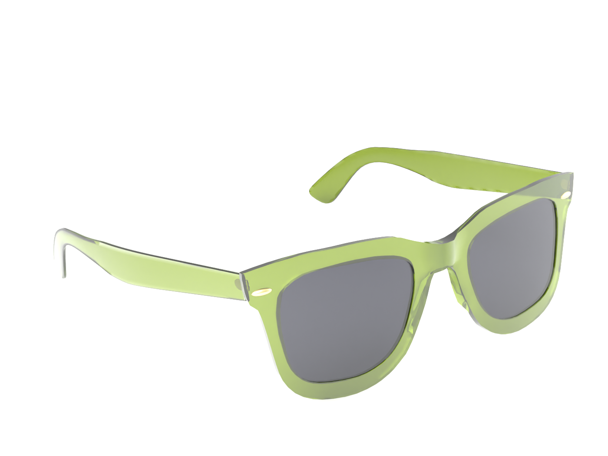
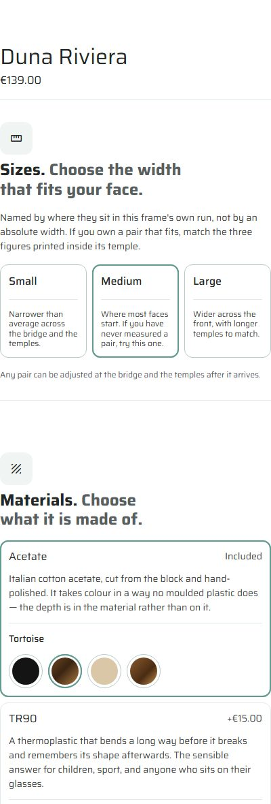
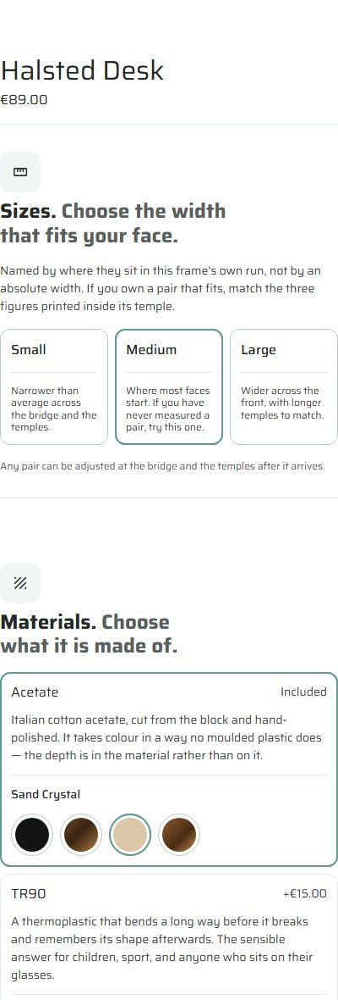
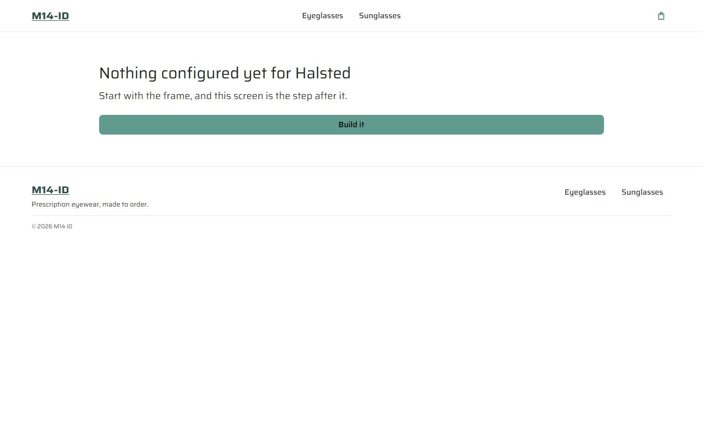
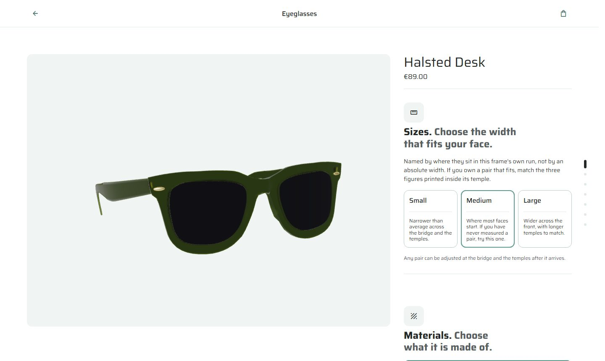
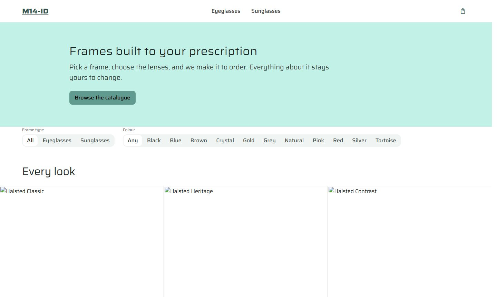
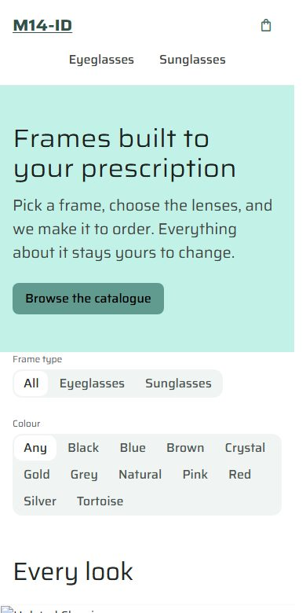
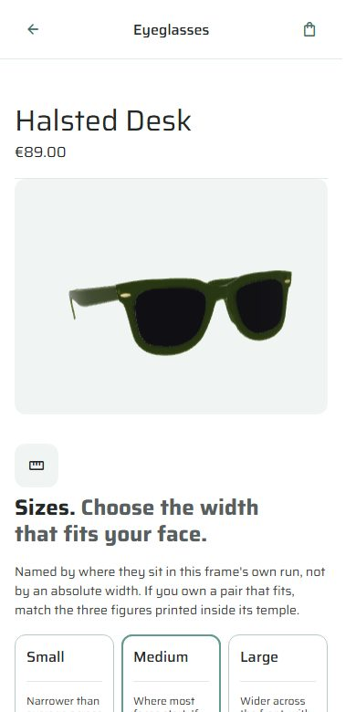
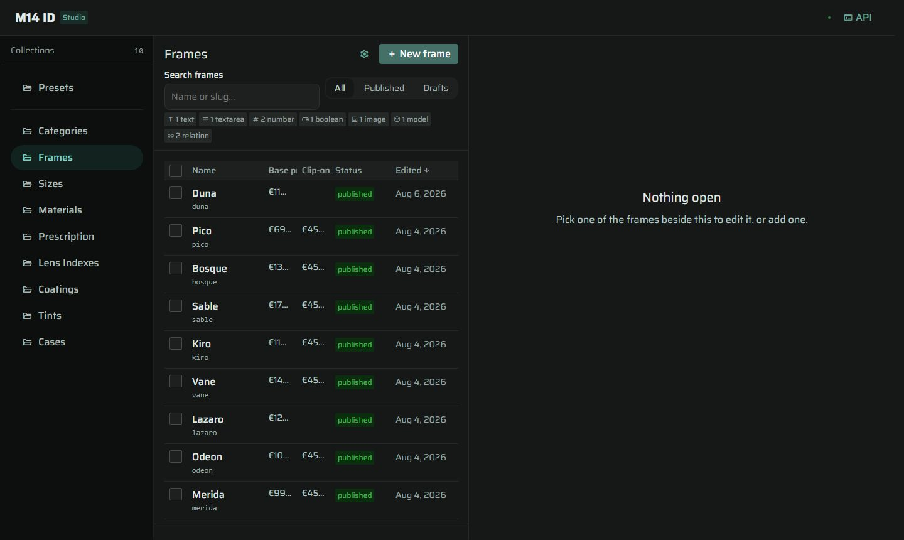
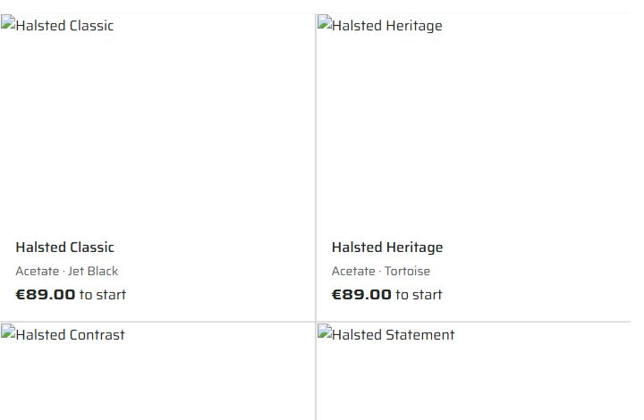

The studio
Authors products, options, order, rules, recommendations and prices. Desktop-only by design — it is a workbench, not a shop.

A visual-first product builder for customizable prescription eyewear, and the CMS that drives it. The shop's behaviour — what it sells, what it asks, and in what order — is authored in the CMS, not written into the storefront.
This was a three-week sprint for an Interactivity class: build a product builder with at least six customization categories, single- and multi-select behaviour, and cross-category rules. The obvious way to satisfy that brief is to hard-code seven steps in the storefront and move on.
The thesis I built instead was that the shop's behaviour belongs in the CMS. A category entry carries a steps array, and the builder renders exactly that order. Changing what a customer is asked, and when, becomes an authoring act rather than a deployment — and the shop's own merchandising logic stops being source code that only a developer can change.
Three deployments make up the system: a storefront, a studio where the catalogue and its rules are authored, and an API between them.
Authors products, options, order, rules, recommendations and prices. Desktop-only by design — it is a workbench, not a shop.
Enforces the schema gate and the conflict rules independently of whichever client is talking to it.
Runs the decisions authored upstream, and tells the customer what each one does to fit, compatibility and price.
The category model is the part of this project I would defend hardest. Two categories ship — sunglasses and eyeglasses — and the DOM order of the builder's sections matches the steps array of the corresponding CMS entry exactly, verified live on both. Introducing it deleted a hard-coded running order, two invisible guards, and four hard-coded order-gate conditions.
The proof that the model is real rather than decorative is the dependsOn relationship. Sun lenses are the same collection in both categories. On sunglasses they are asked third and required. On eyeglasses they are asked ninth and depend on whether the customer took clip-ons. One question, two positions, two obligations — authored, not branched.
Identical opening on both categories. Sizes are named by where they sit in the frame's own run, not by an absolute width.
Sunglasses ask for the tint here and require it. Eyeglasses skip straight to lens type.
The multi-select category. Anti-reflective, scratch resistance, UV, blue-light and easy-clean combine freely.
Eyeglasses only. Sun lenses arrive last here, and only if clip-ons were taken — the dependsOn edge.
Closes both categories. Prescription is a step of both and draws no section — the Rx is a form on the specs screen.
sizes → materials → lens-types → lens-indexes → coatings → clip-ons → sun-lenses → cases, plus prescription.
Adding one is an entry in the studio. The builder reads its steps and renders them in order.



Presets — "looks" — are pre-composed configurations a customer can start from. Thirty-one of them sit over ten frames, so most looks are not tied to the frame they were designed on.
That creates a failure case worth being strict about: a look that names a tint the frame it landed on does not carry. The rule is that an unresolvable look is dropped whole rather than degraded. Rendering it as its clear twin would put a tile on screen promising sunglasses and delivering something else, and a tile that lies is worse than a tile that is absent.
The frames themselves I modelled in Blender and exported to glTF for the 3D stage, which is the primary view of every product — the customer turns the actual object rather than clicking between flat photographs.

The store reflows. Four breakpoints do the whole job: the step rail hides, the mosaic goes three columns to two, the navbar links wrap to a second row, and the mosaic goes two to one.
The product page does something else. At 900px the app renders a different shell entirely — the buy panel and the step rail are not hidden, they do not exist in the document. That is a position rather than an accident: a 400-pixel buy panel standing beside a 3D stage has no phone equivalent. Narrowing it gives you a column too tight to choose in, above a render too small to judge. So it isn't narrowed, it's replaced — and the storefront navigation is replaced too, with a contextual bar carrying a back arrow, the category and the cart.
Four breakpoints: 1279 · 1000 · 959 · 600
A second shell renders below 900px
Measured at 1280, 901, 899 and 390



Most content tools collapse everything that goes wrong into one red box. This one keeps rejected, conflicted and warned separate, because they are three genuinely different situations and the author's next move differs in each.
A conflict is the one worth describing. A save carries the version the author started from; if the record moved underneath them, the API answers 409 and returns what it expected. A lost update becomes a refusal instead of a silent overwrite.
Two more decisions I'd carry into any editor. The studio tracks two records rather than a dirty flag — "3 unsaved changes: name, variants, sizes" stays correct when an author undoes their own edit, which a boolean cannot do. And the schema gate — preview, then read, then backfill — is enforced by the backend independently of the client, with a deliberate carve-out so that fixing a typo in a headline doesn't train people to click through the gate without reading it.
The studio also wears the storefront's palette. Both were sampled: identical tokens, distinguished only by mode. A tool for deciding how a store looks, made out of the store's own material.

Before presenting the work I audited the live deployments with a headless browser rather than reading the source. That decision changed the presentation, and it caught something I would otherwise have been shown from the audience.
Twenty-nine of the thirty images on the storefront do not render. The cause is not a missing file: a colour value is reaching the image source where a photograph should be. The browser resolves #141414 against the origin, requests the page itself, receives 200 and an HTML document, and cannot decode HTML as an image. Failed network responses: zero. Console errors: zero. Nothing anywhere reports a problem — which is precisely the failure mode this codebase's own notes keep warning about. It shipped because the 3D stage, the primary view of every product, renders correctly; you have to know the photograph is supposed to be there to notice it isn't.
The audit also found a reviews band shipping invented ratings and quotations attributed to invented customers. That is a legal problem rather than a technical one — fabricated reviews are prohibited outright in the EU and UK — and it does not ship as it stands.

I originally reported that the buy flow had no mobile layout at all. I had read a fixed-width panel with no stacking rule in the local stylesheets and concluded there was nothing underneath it. That was wrong. The local checkouts were behind the deployments, and the real behaviour — a second shell that replaces the panel entirely — is a better story than the one I first told.
The lesson is narrow and I keep it: the repository describes intent, the deployment describes production, and a claim about a live product has to be measured against the live product. Every number in this case study was read from the running system, not from source.
What I'm proud of: the category model earns its keep, and dependsOn proves it — the same collection asked in two positions with two different obligations, authored by someone who never opens the codebase. What I'd do differently: the image pipeline needed a single test asserting that a rendered tile has non-zero natural width. Every other failure in this system announces itself; that one had no way to.
Authored in the studio and served through the API to the storefront.
Two under sunglasses, eight under eyeglasses. Modelled and exported for the 3D stage.
Pre-composed configurations over ten frames. An unresolvable one is dropped whole, never degraded.
Each carrying its own step order. Adding a third is an authoring act, not a release.